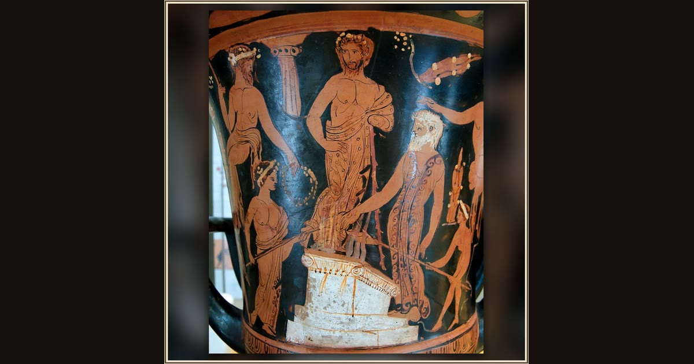

Nestor and His Sons Sacrifice at Pylos
Meleager Painter, Attic Greek · c. 400–380 BCE · Museo Arqueológico Nacional · Madrid, Spain
On this ancient wine-mixing vase, King Nestor’s family gathers at the altar — the same seaside ceremony Telemachus found when he came asking about his father. Explore its place in Book III of the Odyssey.